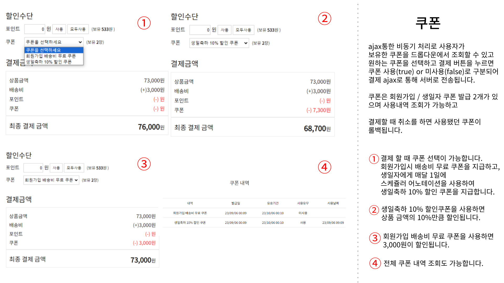
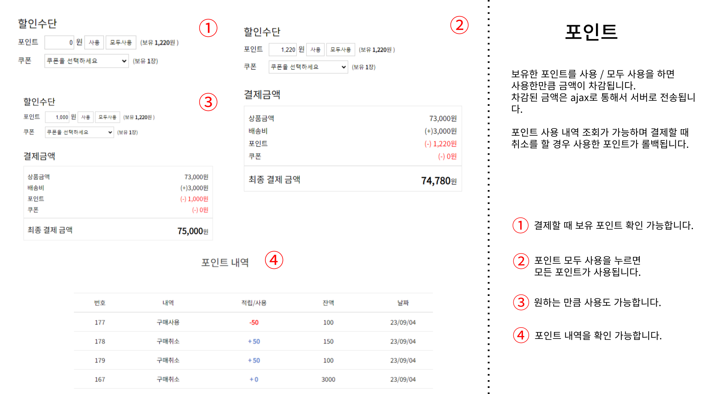
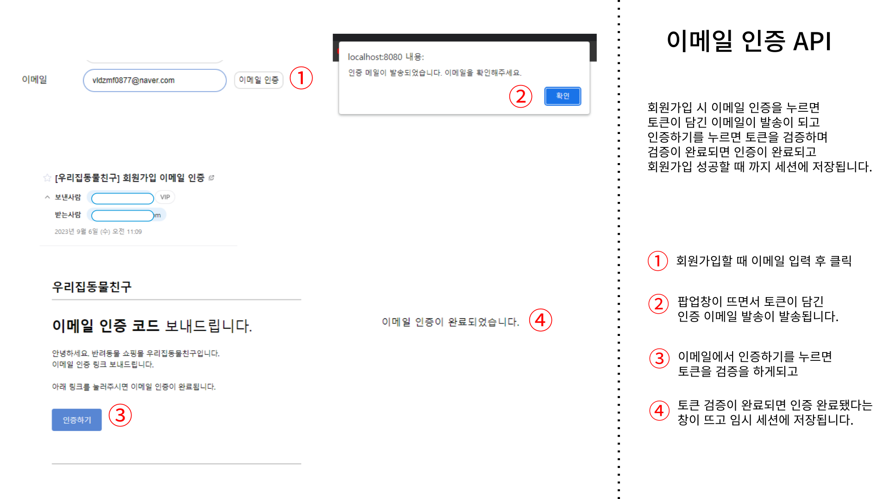
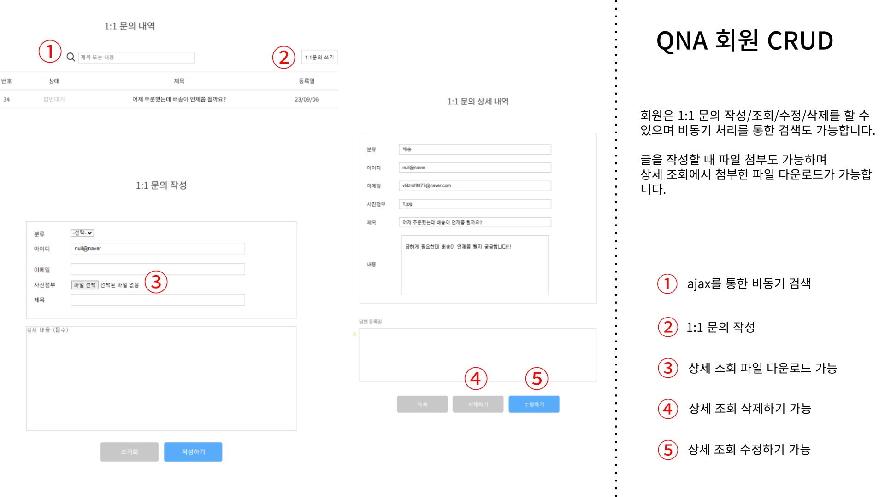
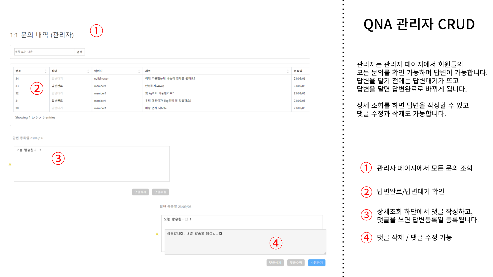
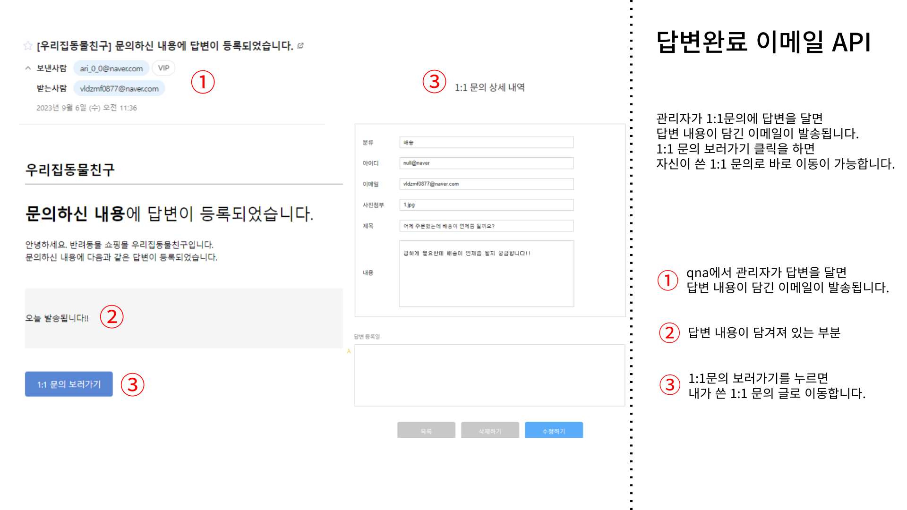
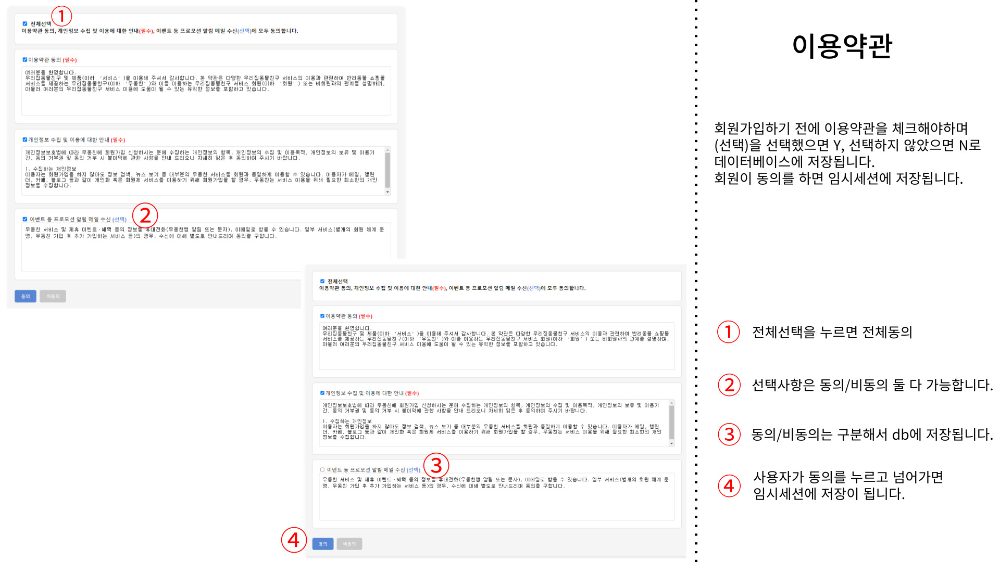

안녕하세요! 창의적이고 유연한 사고를 가지고 있는
백엔드 개발자 전예라입니다.
요즘엔 새로운 과제에 끊임없이 도전하고 문제를 해결하는 것에 재미를
느끼는 중입니다.
📌 2023-02 ~ 2023-09
kh정보교육원 JAVA 국비 과정 수료
✏️ 보유 자격증
정보처리기사 필기
TECH STACK
PET SHOPINGMALL
우리집동물친구 (SpringBoot, 7인)
✅ 프로젝트 설명
반려동물 물품 판매를 중심으로 한 온라인 쇼핑몰입니다. 2023년 현재 반려동물을 키우는 가구 수가 약 552만 가구에 이르며, 이는 전체 가구의 약 25.7%에 해당합니다. 이러한 상승세를 반영하여 반려동물 관련 사업은 지속적으로 성장하고 있습니다. 팀원 중에서도 반려동물을 키우는 팀원이 반 이상이었기에 "반려동물 쇼핑몰을 만들면 어떨까?"라는 아이디어에서 시작하였고, 단순히 물품을 판매하는 것을 넘어서 사용자가 근처 동물병원을 쉽게 찾을 수 있는 기능도 제공합니다.
◾ 팀 일정 관리 및 조율: 팀장을 도와서 팀 일정을 계획하고 관리하여 프로젝트를 시간 내에 완료될 수 있도록 팀원들 간의 작업을 조율하였습니다.
◾ 팀원들의 작업 지원 및 도움: 팀원들이 프로젝트를 원활하게 수행할 수 있도록 부족한 부분에 대해서 도움을 지원했습니다.
◾ 웹 디자인 및 세부적인 CSS 작업
✅ 구현한 기능
◾ 쿠폰 (사용, 조회, 발급, 취소)
- 회원가입 시 배송비 쿠폰 자동 발급 및 생일 축하 쿠폰을 매달 자동으로 제공합니다. 발급된 쿠폰은 상품 구매 시 사용 가능합니다.
◾ 포인트 (사용, 조회, 적립, 취소)
- 초기 가입 보상으로 포인트를 적립해주며, 상품 구매 시 일반 회원은 1%, 구독 회원은 3%의 포인트가 자동 적립됩니다.
◾ 회원가입 이메일 인증 API
- 회원가입 시 이메일 인증을 통해 가입을 완료하게 하며, 인증 토큰을 포함한 이메일을 자동으로 발송합니다.
◾ 답변 이메일 전송 API
- 1:1 문의에 대한 관리자의 답변이 등록되면 해당 내용을 담은 이메일이 회원에게 자동으로 발송됩니다.
◾ Q&A 회원 CRUD
- 회원은 1:1 문의를 작성할 수 있고, 사진 첨부 및 다운로드 기능을 지원합니다.
◾ Q&A 관리자 CRUD
- 관리자 페이지에서는 회원의 문의에 직접 답변을 할 수 있습니다.
◾이용약관
- 회원가입을 할 때 이용약관 동의가 필수적으로 이루어지며, 동의 정보는 데이터베이스에 저장됩니다.
✅ 프로젝트를 통해서 배운 점
◾ 프로젝트 관리 경험: 이번 프로젝트에서는 처음으로 PM의 역할을 수행해보았습니다. 기존에는 주로 팀원 역할을 하다가, 이번에는 팀원들의 질문에 응답하고, 작업을 조율하는 등의 새로운 역할에 도전했습니다. 이 과정이 생각보다 복잡하고 어려웠지만, 많은 배움과 성장을 얻을 수 있었습니다.
◾ 로직 설계 능력 향상: 포인트와 쿠폰 기능을 구현하면서 복잡한 로직을 설계하고 적용하는 방법을 배웠습니다.
◾ 효율적인 데이터 조회 방법: 기존에는 직접 테이블을 참조하는 방식을 사용했으나, 이번에는 매핑 테이블을 통한 효율적인 데이터 조회 방법을 배웠습니다.
◾ Mybatis 활용 능력: Mybatis의 resultMap과 Collection 기능을 활용해, 더욱 복잡하고 세밀한 데이터 매핑을 수행할 수 있게 되었습니다.
◾ 성능 최적화: 데이터 조회 시, DTO의 효율적 설계와 SQL 쿼리 작성 방법이 전체 시스템 성능에 결정적인 영향을 미칠 수 있다는 것을 깨달았습니다.
COUPON

POINT

SING UP EMAIL API

QNA USER CRUD

QNA ADMIN CRUD

ANSWER EMAIL API

TERMS OF USE

TROUBLE SHOOTING
MAPPING TABLE을 이용한 유연한 테이블 설계
💦 문제 상황
처음에는 image_attachment 테이블이 question_id를 참조하도록 설계했다. 그런데 이 테이블을 review, product, cart 등 여러 테이블에서도 사용해야 한다는 사실을 깨달았다. 이렇게 되면 참조 관계가 복잡해지고, 의존성이 높아져 유연성이 떨어진다는 문제점이 있다.
🔅 해결 방안
항상 참조를 이용해 왔기 때문에 매핑 테이블은 처음이었다. 트랜잭션 처리를 통해 insertQuestion ServiceImpl에서 먼저 질문을 데이터베이스에 저장한다. 그 다음 이미지 파일을 데이터베이스에 저장하고, 마지막으로 questionId와 imageId를 이미지 매핑 테이블에 저장한다. 이러한 절차를 거쳐 이미지를 불러올 때에는 미리 준비해둔 DTO와 resultMap을 이용하여 조인을 수행한다. 이를 통해 참조 없이도 원하는 이미지를 불러올 수 있게 되었다.
📝 배운 점
MyBatis의 resultMap과 collection 태그를 제대로 사용해볼 수 있었다. 특히나 collection 태그는 자주 사용하지 않아서 어려웠던 태그였는데 매핑 테이블을 사용함으로써 새로운 지식과 경험을 얻을 수 있었다.
REVIEW
프로젝트를 마치며
파이널 프로젝트는 자율적으로 진행되어 팀원 선정이 아주 중요했다. 팀에는 다양한 역량을 가진 사람들이 모였고, 그에 따라서 기능 분배를 끝냈다.
일부 팀원과의 의사소통에서 어려움이 있었지만, 이를 극복하기 위해 주기적인 회의와 코드 리뷰를 진행했다. 특히, 노션을 적극적으로 활용해서 작업을 할당하고 진행 상황을 체크하는 등의 방법으로 팀 내 협업을 향상시켰다.
따라오지 못 하는 팀원들을 케어하며 기한 내에 끝낼 수 있도록 도움을 줬고, 마지막에는 팀원들이 기한 내에 끝내지 못 했던 기능을 대신 마무리 지었다.
파이널 프로젝트를 진행하면서 하루 밤을 새도 다 말하지 못할 정도로 많은 어려움을 겪었지만, 그 과정에서 팀원들과 어떻게 소통하고 협업해야 하는지에 대한 깊은 인사이트를 얻을 수 있었다.
게다가, 팀에서 뒤쳐지는 팀원들을 어떻게 이끌어 나가야 하는지에 대한 배움도 얻었다.
결론적으로 프로젝트는 성공적으로 완료되었고, 이 경험은 힘들었지만 굉장히 뿌듯한 결과로 이어졌다. 이 프로젝트를 통해 얻은 배움과 경험을 앞으로 더 성장할 수 있는 발판으로 삼아야겠다.
OTHER PROJECTS
털뭉치들 (Servlet, 5인)
✅ 프로젝트 설명
유기견과 유기묘를 입양할 수 있는 플랫폼을 제공하는 입양 사이트입니다. 2022년 기준으로 약 11만 2천 마리의 유기동물이 발생했음을 감안하여, 이들에게 새로운 가정을 찾아주고자 시작된 프로젝트입니다. 펫샵 대신 유기동물 입양을 선택하게끔 사람들을 유도함으로써, 유기동물 문제를 해결하는 것이 주 목적입니다.